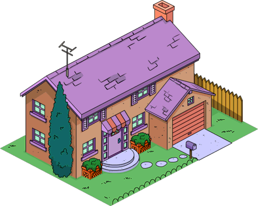
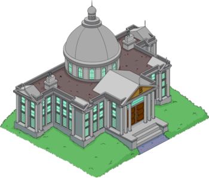
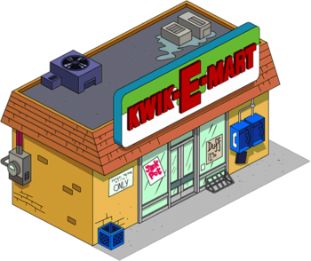
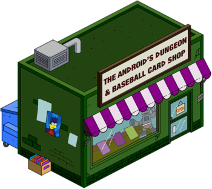
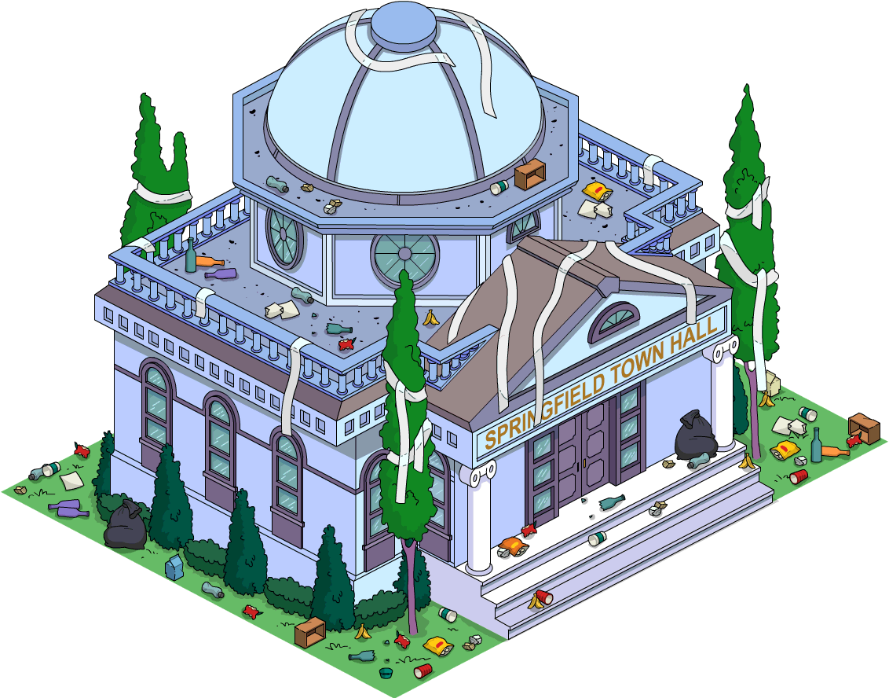
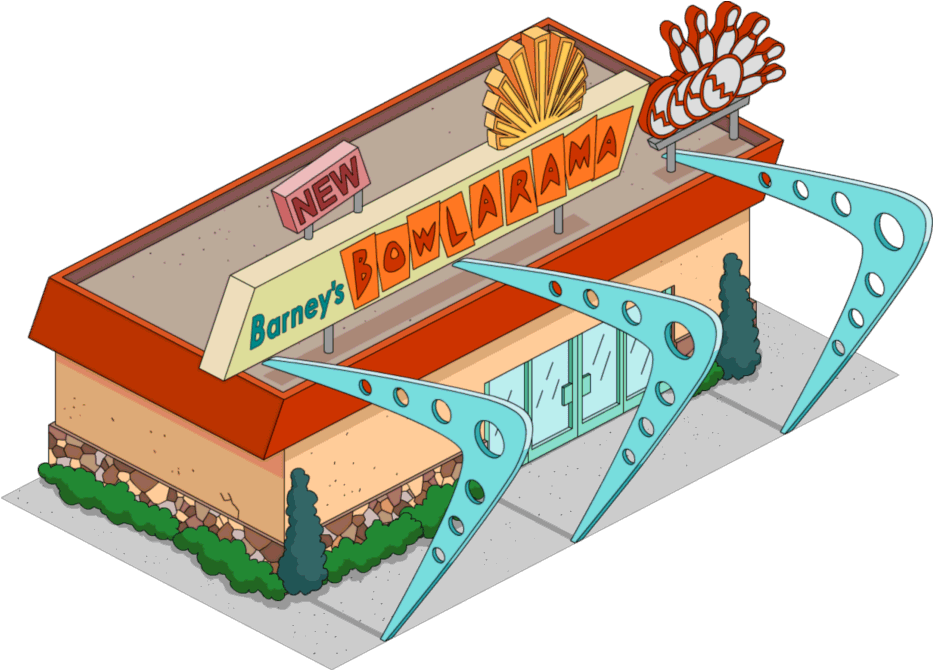
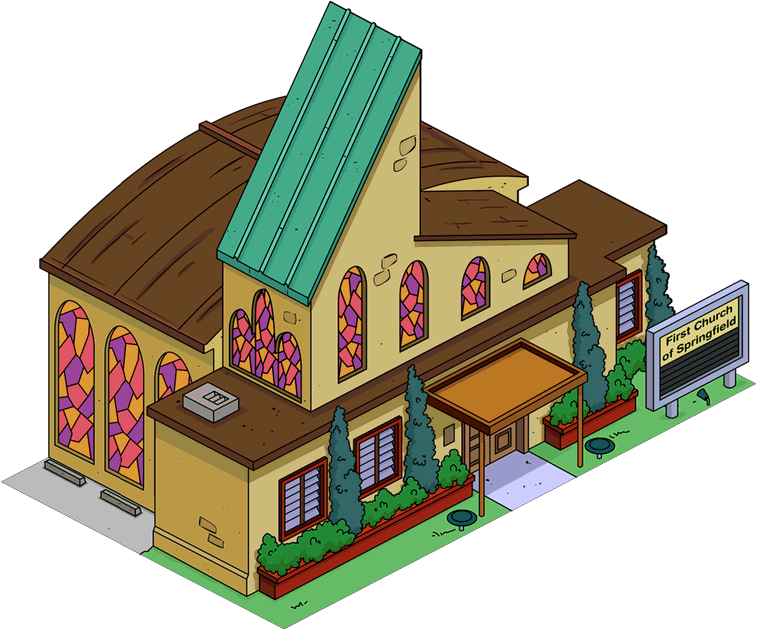
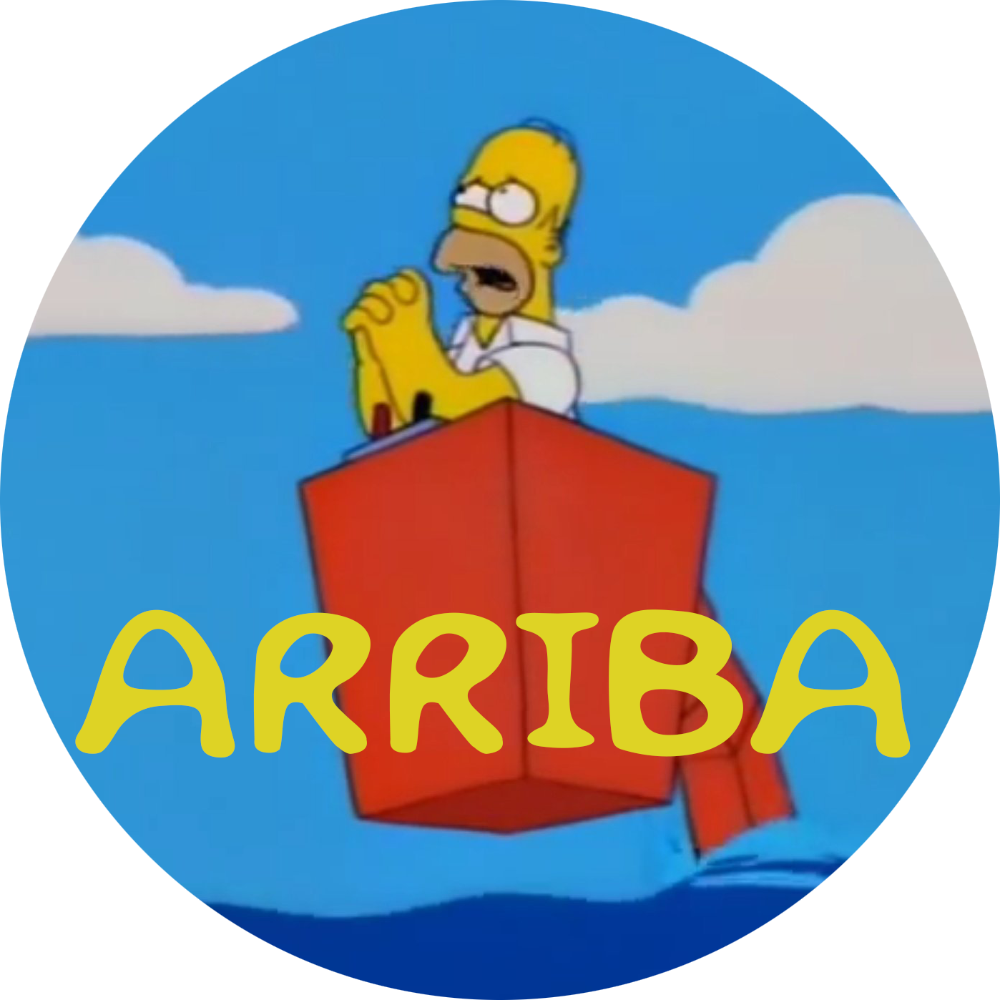

Inicio
Personajes
Lugares
Momentos
Creditos
Iniciar Sesión
Los 9 edificios mas importantes de Los Simpsons
Aqui encontraras los edificios mas importante de esta gran serie, dale click para mas informacion







Casa de los Simpsons
Casa de los Flanders
Casa del Sr Burns
Badulaque
Tienda de Comics
Ayuntamiento
Colegio
Bolera
Iglesia
